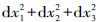
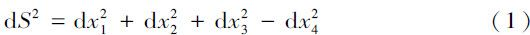

牛顿物理学的特点是承认空间和时间乃是和物质一样地有其独立而实际的存在，这是因为在牛顿的运动定律中出现了加速度的观念。但是，按照这一理论，加速度只可能指“相对于空间的加速度”。因此，为了使牛顿运动定律中出现的加速度能够被看作是一个具有意义的量，就必须把牛顿的空间看作是“静止的”，或者最少是“非加速的”。对于时间而言，情况完全相同，时间当然也同样与加速度的概念有关。牛顿本人以及与他同时代的有识之士都感到，把空间本身和空间的运动状态同样地说成为具有物理实在性是不很妥当的；但是，为了使力学具有明确的意义，当时没有别的办法。
要人们把一般的空间，尤其是一无所有的空间，视为具有物理实在性，的确是一种苛刻的要求。自远古以来哲学家们就已一再拒绝作这样的假设。笛卡尔曾大体上按照下述方式进行论证： 空间与广延性是同一的，但广延性是与物体相联系的；因此，没有物体的空间是不存在的，亦即一无所有的空间是不存在的。这个论点的弱点主要有如下述。广延性概念起源于我们能把固体铺展开来或拼靠在一起的经验，这一点当然是对的。但不能由此得出结论说，如果某些事例本身不是构成广延性概念的缘由，这个概念就不可能适用于这些事例。照这样来推广概念是否合理，可以间接地由其对于理解经验结果时所具有的价值来证明。因此，关于广延性的概念仅能适用于物体的断言，就其本身而论肯定是没有根据的。但是以后我们将会看到，广义相对论绕了一个大弯仍旧证实了笛卡尔的概念。使笛卡尔得出他的十分吸引人的见解的，肯定是这样的感觉，即只要不是万不得已的情况，我们不应该把像空间这一类无法“直接体验” [1] 的东西视为具有实在性。
以我们通常的思想习惯为基础来考虑，空间观念或这一观念的必要性的心理起源，远非表面看来那样明显。古代的几何学家所研究的是概念上的东西(直线、点、面)，并没有真正研究到空间本身，像后来在解析几何学上所做到的那样。但是，空间观念仍可以从某些原始经验得到一些启示。例如： 假定有一个已经造好了的箱子。我们可以按照某种方法把物体排列在箱子里面，把它装满。这种排列物体的可能性是“箱子”这个物质客体的属性，是随着箱子而产生的，也就是随着被箱子“包围着的空间”而产生的。这个“被包围着的空间”因不同的箱子而异，人们很自然地认为这个“被包围着的空间”在任何时刻都不依赖于箱子里面真有物体存在与否。当箱子里面没有物体时，箱子的空间看起来似乎是“一无所有的”。
到目前为止，我们的空间概念是同箱子联系在一起的。但是，我们知道，使箱子空间具有容纳物体的可能性并不取决于箱壁的厚薄如何。能不能把箱壁的厚度缩减为零而又使这个“空间”不致因此而消失呢?显然这种求极限的方法是很自然的。这样，在我们的思想中就只剩下了没有箱子的空间，一个本身自然存在的空间；虽然，如果我们把这个概念的起源忘掉的话，这个空间似乎还是很不实在。人们能够了解，把空间看作与物质客体无关且可以脱离物质而存在的东西，是和笛卡尔的论点相反的 [2] 。(但是这并没有妨碍他在解析几何学中把空间作为一个基本概念来处理。)当人们指出水银气压计中有真空存在时，肯定就完全驳倒了所有持有笛卡尔见解的人们。但是不可否认，甚至在这初始阶段，空间的概念或者空间被看作是独立而实在的东西，已带有某些不能令人满意之处了。
用什么方法能够把物体装入空间(例如箱子)，是三维欧几里得几何学的课题。欧几里得几何学的公理体系很容易使人迷惑，使人忘记它所讨论的仍是可以成为现实的东西。
如果空间概念是按照上述方式形成的，如果从“填满”箱子的经验推论下去，那么这个空间根本上是一个有界的空间。但是，这种限制看来并不是必要的，因为显然我们总可以用一个比较大的箱子把那个比较小的箱子装进去。这样看来，空间又好像是无界的。
在这里我不准备讨论关于三维性质的和欧几里得性质的空间概念如何能溯源于比较原始的经验。我想首先从其他角度来讨论一下空间概念在物理学思想发展过程中所起的作用。
当一个小箱子s 在一个大箱子S 的全空空间中处于相对静止的状态时，s 的全空空间就是S 的全空空间的一部分，而且把s 和S 的全空空间一起包括进去的同一个“空间”，既属于箱子s ，也属于箱子S 。但是，当s 相对于S 运动时，这个概念就不那么简单了。人们就要认为s 总是包围着同一空间，但其所包围的S 的一部分空间则是可变的。这样就有必要认定每一个箱子各有其特别的、无界的空间，并且有必要假定这两个空间彼此作相对运动。
在人们注意到这种复杂情况以前，空间看来好像是物体在其中游来游去的一种无界的媒质或容器。但是现在必须记得，空间有无限多个，这些空间彼此作相对运动。认为空间是客观存在的、是不依赖于物质的这种概念系属于现代科学兴起以前的思想。但是关于存在着无限多个作相对运动的空间的观念则是现代科学兴起以后的思想。后一观念在逻辑上的确是无可避免的，但是这种观念甚至在现代科学思想中也远未起过重要的作用。
关于时间概念的心理起源又是怎样的呢?这个概念无疑是与“回想”相联系的，而且也与感觉经验和对这些经验的回忆这两者之间的辨别相联系。感觉经验与回忆(或简单重视)之间的辨别是否在心理上由我们直接感到的呢?这一点就其本身而言是有疑问的。每一个人都有过这样的经验，就是曾经怀疑某件事是通过自己的感官真正经验过的呢?还是只不过是一个梦。在这两种可能性之间进行辨别的能力大概最初是脑子要整理出次序来的一种活动的结果。
如果一个经验是与一个“回忆”联系在一起的，那么就认为这个经验与“此刻的经验”相比是“较早的”。这是一种用于回忆经验的排列概念次序的原则，而贯彻这个原则的可能性就产生了主观的时间概念，亦即关于个人经验的排列的时间概念。
使时间概念具有客观意义是什么意思呢?我们举一个例子。某甲(“我”)有这样的经验：“天空正在闪电”。与此同时，某甲还经验到某乙的这样的一种行为，某甲可以把这种行为与他本身关于“天空正在闪电”的经验联系起来。这样某甲就把“天空正在闪电”的经验与某乙联系起来。对于某甲来说，他认为其他的人也参与了“天空正在闪电”的经验。“天空正在闪电”就不再被解释为一种个人独有的经验，而是解释为其他人的经验(或者最终解释为仅仅是一种“潜在的经验”)。这样就产生了这样的解释：“天空正在闪电”本来是进入意识中的一个“经验”，而现在也可以解释为一个(客观的)“事件”了。当我们谈到“实在的外部世界”时，所指的就是所有事件的总和。
我们已经看到，我们感到必须为我们的经验规定一种时间排列，大体上如下所述。如果β 迟于α ，而γ 又迟于β ，则γ 也迟于α (“经验的序列”)。对于我们已经与经验联系起来的“事件”而言，这方面的情况又是如何的呢?乍看起来似乎显然可以假定事件的时间排列是存在的，这种排列与经验的时间排列是一致的。一般来说，人们已不自觉地作出了这个假定，直到产生疑问为止 [3] 。为了获得客观世界的观念，还需要有另一个辅助概念： 事件不仅确定于时间，而且也确定于空间。
在前几段中我们曾试图描述空间、时间和事件诸概念在心理上如何能与经验联系起来。从逻辑上说来，这些概念是人类智力的自由创造物，是思考的工具，这些概念能把各个经验相互联系起来，以便更好地考察这些经验。要认识这些基本概念的经验起源，就应该弄清楚我们实际上在多大的范围内受这些概念的约束。这样我们就可以认清我们所具有的自由；要在必要的时候合理地利用这种自由总是相当困难的。
这里关于空间-时间-事件诸概念(我们将把这些概念简称为“类空”概念，以有别于心理学方面的概念)的心理起源方面，我们还要作一些必要的补充。我们曾经利用箱子以及在箱子里面排列物质客体的例子把空间概念与经验联系起来。因此，此种概念的形成就已经以物质客体(例如“箱子”)的概念为前提。同样，对于客观的时间概念的形成，人也起着物质客体的作用。所以，依我看来，物质客体概念的形成必须先于我们的时空概念。
所有这些类空概念，与心理学方面的痛苦、目标和目的第一类的概念一样，同属于现代科学兴起以前的思想。目前物理思想的特点，和整个自然科学思想的特点一样，是在原则上力求完全用“类空”概念来说明问题，力求借助于这些概念来表述一切具有定律形式的关系。物理学家设法把颜色和音调归之于振动；生理学家设法把思想和痛苦归之于神经作用。这样就从事物存在的因果关系中消除了心理因素，这种心理因素从而在任何情况下都不构成因果关系中的一个独立环节。目前“唯物主义”一词无疑正是指的这种观点，亦即认为完全用“类空”概念来理解一切关系在原则上是可能的。(因为“物质”已失去了作为基本概念的地位。)
为什么必须把自然科学思想中的基本观念从柏拉图的奥林巴斯天界上［希腊神话传说奥林巴斯山(在希腊北部)是太古时代希腊诸神居住之处，这里指很大的架势而言。——译者注］拖下来并设法把它们的世俗血统揭发出来呢?答曰为了使这些观念摆脱与世隔绝的禁令，从而能够在构成观念或概念方面获得更大的自由。休谟和马赫首先提出这种中肯的想法，他们在这方面具有不朽的功劳。
科学从科学发展前的思想中将空间、时间和物质客体(其中重要的特例是“固体”)的概念接收过来，加以修正，使之更加确切。在这方面第一个重要的成就是欧几里得几何学的发展。我们绝不应该只看到欧几里得几何学的公理体系而看不到它的经验起源(把固体铺展开来或拼靠在一起的可能性)。具体说来，空间的三维性和欧几里得特性都是起源于经验的(空间可以完全用结构相同的“立方体”充满)。
由于发现了完全刚性的物体是不存在的，使得空间概念更加微妙了。一切物体都可以作弹性形变，它们的体积随着温度的变化而改变。因此，几何结构(其全等的可能性由欧几里得几何学来描述)的表示不能脱离物理概念。但是由于物理学毕竟还须假手于几何学始能建立其中的一些概念，因而几何学的经验性内容只能就整个物理学的体制来陈述和检验。
关于这个空间概念还不能忘却原子论及其对物质的有限的可分割性的概念；因为比原子还小的空间是无法量度的。原子论还迫使我们在原则上放弃认为可以清楚地和静止地划定固体界面的这种观念。严格说来，甚至在宏观领域中，对于相互接触的固体的可能位形而言，精确的定律也是不可能有的。
尽管如此，还是没有人想放弃空间概念。因为在自然科学的最圆满的整个体系中，空间概念看来是不可缺少的。在19世纪，唯有马赫曾经认真地考虑过舍弃空间概念，而用所有质点之间的瞬时距离的总和的概念来代替它。(他这样做是为了试图求得对惯性的满意的理解。)
(1)场
在牛顿力学中，空间和时间起着双重作用。第一，空间和时间起着所发生的物理事件的载体或框架的作用，相对于此载体或框架，事件是由其空间坐标和时间来描述的。原则上物质被看作是由“质点”所组成，质点的运动构成物理事件。倘若我们要把物质看作是连续的，我们只能在人们不愿意或不能够描述物质的分立结构的情况下暂时作这样的假定。在这种情况下，物质的微小部分(体积元)同样可以当作质点来处理；至少我们可以在只考虑运动而不考虑此刻不可能或者没有必要归之于运动的那些事件(例如温度变化、化学过程)的范围内照这样来处理。空间和时间的第二个作用是当作一种“惯性系”。在可以设想的所有参考系中，惯性系被认为具有这样的好处，就是惯性定律对于惯性系是有效的。
这里，主要之点是： 人们曾设想，不依赖于主观认识的“物理实在”是由空时(为一方)以及与空时作相对运动的永远存在的质点(为另一方)所构成(至少在原则上是这样)。这个关于空时独立存在的观点，可以用这种断然的说法来表达： 如果物质消失了，空时本身(作为表演物理事件的一种舞台)仍将依然存在：
理论的发展打破了这种观点。这个发展最初似乎与空时间题毫不相干。这个发展就是出现了场的概念以及最后在原则上要用这个概念来取代粒子(质点)观念的趋势。在经典物理学的体制中，场的概念是在物质被看作连续体的情况中作为一种辅助性的概念而出现的。例如，在考虑固体的热传导时，物体的状态是由物体每一点在每一个确定时刻的温度来描述的。在数学方法上，这就是意味着将温度T 表示为温度场，亦即表示为空间坐标和时间t的一个数学表示式(或函数)。热传导定律被表述为一种局部关系(微分方程)，其中包括热传导的所有特殊情况。这里，温度就是场的概念的一个简单的例子。这是一个量(或量的复合)，是坐标和时间的函数。另一个例子就是对液体运动的描述。在每一个点上每一时刻都有一个速度，其值即由该速度对于一个坐标系的轴的三个“分量”来加以描述(矢量)。这里，在每一个点的速度的各个分量(场分量)也是坐标(x,y,z )和时间(t )的函数。
上面所提到的场的特性是它们只存在于有质物质之中；它们仅仅用来描述这种物质的状态。按照场概念的历史发展看来，没有物质的地方就不可能有场存在。但是，在19世纪的头二十五年中，人们证明，如果把光看作一种波动场——与弹性固体中的机械振动场完全相似，那么光的干涉和运动现象就能够解释得极为清楚。因此人们就感到有必要引进一种在没有有质物质的情况下也能存在于“一无所有的空间”中的场。
这一情况产生了一个自相矛盾的局面。因为，按照其起源，场概念似乎仅限于描述有质体内部的状态。由于人们确信每一种场都应看作是能够给予力学解释的一种状态，而这又是以物质的存在为前提的，因为场概念只应限于描述有质体内部的状态这一点就显得更加确切了。因此人们感到不得不假定，甚至在一向被认为是一无所有的空间中也到处存在着某种形式的物质，这种物质称为“以太”。
将场概念从场必须有一个机械载体与之相联系的假定中解放出来，这在物理思想发展中是在心理方面最令人感到兴趣的事件之一。19世纪下半叶，从法拉第和麦克斯韦的研究成果中越来越清楚地看到，用场描述电磁过程大大胜过了以质点的力学概念为基础的处理方法。由于在电动力学中引进场的概念，麦克斯韦成功地预言了电磁波的存在，由于电磁波与光波在传播速度方面是相等的，它们在本质上的同一性也是无可怀疑的了。因此，光学在原则上就成为电动力学的一部分。这个巨大成就的一个心理效果是，与经典物理学的机械唯物论体制相对立的场概念逐渐赢得了更大的独立性。
但是最初人们还是认为理所当然地必须把电磁场解释为以太的状态，并且极力设法把这种状态解释为机械性的状态。由于这种努力总是遭到失败，科学界才逐渐接受了放弃此种机械解释的主张。然而人们仍然确信电磁场必然是以太的状态。19世纪和20世纪之交，情况就是这样。
以太学说带来了一个问题： 相对于有质体而言，以太的行为从力学观点看来是怎样的呢?以太参与物体的运动呢，还是以太各个部分彼此相对地保持静止状态呢?为了解决这个问题，人们曾经做了许多巧妙的实验。这方面应提到下列两个重要事实： 由于地球周年运动而产生的恒星的“光行差”和“多普勒效应”——即恒星相对运动对其发射到地球上的光的频率上的影响(对已知的发射频率而言)。对于所有这些事实和实验的结果，除了迈克耳孙-莫雷实验以外，洛伦兹根据下述假定都作出了解释。这个假定就是以太不参与有质体的运动，以太各个部分相互之间完全没有相对运动。这样，以太看来好像就体现一个绝对静止的空间。但是洛伦兹的研究工作还取得了更多的成就。洛伦兹根据下述假定解释了当时所知道的在有质体内部发生的所有电磁和光学过程。这就是，有质物质对于电场的影响——以及电场对于有质物质的影响——完全是由于： 物质的组成粒子带有电荷，而这些电荷也参与了粒子的运动。洛伦兹证明了，迈克耳孙-莫雷实验所得出的结果至少与以太处于静止状态的学说并不矛盾。
尽管有这些辉煌的成就，以太学说的这种光景仍然不能完全令人满意，其理由有如下述。经典力学(无可怀疑，经典力学在很高的近似程度上是成立的)告诉我们，一切惯性系或惯性“空间”对于自然律的表达方式都是等效的；亦即从一惯性系过渡到另一惯性系，自然律是不变的。电磁学和光学实验也以相当高的准确度告诉我们同样的事实。但是，电磁理论基础却告诉我们，必须优先选取一个特别的惯性系，这个特别的惯性系就是静止的光以太。电磁理论基础的这一种观点实在非常不能令人满意。难道不会有也同经典力学那样去支持惯性系的等效性(狭义相对性原理)的修正理论么?
狭义相对论回答了这个问题。狭义相对论从麦克斯韦-洛伦兹理论中采用了关于在真空中光速保持恒定的假定。为了使这个假定与惯性系的等效性(狭义相对性原理)相一致，必须放弃“同时性”带有绝对性质的观念；此外，对于从一个惯性系过渡到另一个惯性系，必须引用时间和空间坐标的洛伦兹变换。狭义相对论的全部内容包括在下述公理中： 自然界定律对于洛伦兹变换是不变的。这个要求的重要实质在于它用一种确定的方式限定了所有的自然律。
狭义相对论对于空间问题的观点如何?首先我们必须注意不要认为实在世界的四维性是狭义相对论第一次提出的新看法。甚至早在经典物理学中，事件就由四个数来确定，即三个空间坐标和一个时间坐标；因此全部物理“事件”被认为是寓存于一个四维连续流形中的。但是，根据经典力学，这个四维连续区客观地分割为一维的时间和三维的空间两部分，而只有三维空间才存在着同时的事件。一切惯性系都作了同样的分割。两个确定的事件相对于一个惯性系的同时性也就含有这两个事件相对于一切惯性系的同时性。我们说经典力学的时间是绝对的就是这个意思。狭义相对论的看法则与此不同。所有与一个选定的事件同时的诸事件就一个特定的惯性系而言确实是存在的，但是这不再能说成为与惯性系的选择无关的了。于是四维连续区不再能够客观地分割为两个部分，而是整个连续区包含了所有同时事件；所以“此刻”对于具有空间广延性的世界失去了它的客观意义。由于这一点，如果要表示客观关系的意义而不带有不必要的因袭的任意性的话，那么空间和时间必须看作是具有客观上不可分割性的一个四维连续区。
狭义相对论揭示了一切惯性系的物理等效性，因而也就证明了关于静止的以太的假设是不能成立的。因此必须放弃将电磁场看作物质载体的一种状态的观点。这样，场就成为物理描述中不能再加分解的基本概念，正如在牛顿的理论中物质概念不能再加分解一样。
到目前为止，我们一直把注意力放在探讨狭义相对论在哪一方面修改了空时概念。现在我们来看看狭义相对论从经典力学吸取了哪些基本观念。在狭义相对论中，自然律也是仅在引用惯性系作为空时描述的基础时才是有效的。惯性原理和光速恒定原理只有对于一个惯性系才是有效的。场定律也是只有对于惯性系才能说是有意义和有效的。因此，如同在经典力学中一样，在狭义相对论中，空间也是表述物理实在的一个独立部分。如果我们设想把物质和场移走，那么惯性空间(或者说得更确切些，这个空间连同联系在一起的时间)依然存在。这个四维结构(闵可夫斯基空间)被看作是物质和场的载体。各惯性空间连同联系在一起的时间，只是由线性洛伦兹变换联结起来的一种特选的四维坐标系。由于在这个四维结构中不再存在着客观地代表“此刻”的任一部分，事物的发生和生成的概念并不是完全用不着了，而是更为复杂化了。因此，将物理实在看作一个四维存在，而不是像直到目前为止那样，将它看作一个三维存在的进化，似乎更加自然些。
狭义相对论的这个刚性四维空间，在某种程度上类似于洛伦兹的刚性三维以太，只不过它是四维的罢了。对于狭义相对论而言，下述陈述也是合适的： 物理状态的描述假设了空间是原来就已经给定的，而且是独立存在的。因此，连狭义相对论也没有消除笛卡尔对“空虚空间”是独立存在的或者竟然是先验性存在的这种见解所表示的怀疑。这里作初步讨论的真正目的就是要说明广义相对论在多大的程度上解决了这些疑问。
(2)广义相对论的空间概念
广义相对论的起因主要是力图对惯性质量和引力质量的同等性有所了解。我们从一个惯性系S 1 来说起，这个惯性系的空间从物理的观点看来是空虚的。换句话说，在所考虑的这部分空间中，既没有物质(按照通常的意义)，也没有场(按照狭义相对论的意义)。设有另一个参考系S 2 相对于S 1 作匀加速运动。这时候S 2 就不是一个惯性系。对于S 2 来说，每一个试验物体的运动都具有一个加速度，这个加速度与试验物体的物理性质和化学性质无关。因此，相对于S 2 ，最少就第一级近似而言，就存在着一种与引力场无法区分的状态。因此，下述概念是与可观察的事实相符的： S2也可以相当于一个“惯性系”；不过相对于S 2 又另存在着一个(均匀)引力场(关于这个引力场的起源，这里不必去管它)。因此，当讨论的体系中包括引力场时，惯性系就失去了它本身的客观意义(假定这个“等效原理”可以推广到参考系的任何相对运动)。如果在这些基本观念的基础上能够建立起一个合理的理论，那么这个理论本身将满足惯性质量与引力质量相等的事实，而这个事实是已被经验所充分证实的。
从四维的观点来考虑，四个坐标的一种非线性变换对应于从S1到S2的过渡。这里产生了一个问题： 哪一种非线性变换是可能的，或者说，洛伦兹变换是怎样推广的?下述考虑对于回答这个问题具有决定性的意义。
设早先的理论中的惯性系具有这个性质： 坐标差由固定不移的“刚性”量杆测量，时间差由静止的钟测量。对第一个假定还须补充以另一个假定，即对于静止的量杆的相对展开和并接而言，欧几里得几何学关于“长度”的诸定理是成立的。这样，经过初步的考虑，就可以从狭义相对论的结果得出下述结论： 对于相对于惯性系S 1 作加速运动的参考系(S 2 )而言，对坐标作此种直接的物理解释不再是可能的了。但是，如果情况是这样的话，坐标现在就只能表示“邻接”的级或秩，也就是只能表示空间的维级，但一点也不能表示空间的度规性质。这样我们就意识到从已有的变换推广到任意连续变换 [4] 的可能性。而这里就已具有广义相对性原理的含义：“自然律对于任意连续的坐标变换必须是协变的。”这个要求(连带着自然律应具有最大可能的逻辑简单性的要求)远比狭义相对性原理更为有力地限制了一切自然律。
这一系列的观念主要是以场作为一个独立的概念为基础的。因为，对于S 2 有效的情况被解释为一种引力场，而并不问其是否存在着产生这个引力场的质量。借助于这一系列的观念，还可以理解到为什么纯引力场定律比起一般的场(例如在有电磁场存在的时候)的定律来，它与广义相对论有更为直接的联系。也就是说，我们有充分的理由假定，“没有场”的闵可夫斯基空间表示自然律中可能有的一种特殊情况，事实上这是可以设想的最简单的特殊情况。就其度规性质而言，这样的空间的特性可由下述的方式表示：

等于一个三维“类空”截面上无限接近的两点的空间间隔的实测值(用单位标准长度量度)的平方(毕达哥拉斯定律)；而dx 4 则是具有共同的(x 1 ,x 2 ,x 3 )的两个事件的时间间隔(以适当的计时标准量度)。这一切只不过是意味着将一种客观的度规意义赋予下面这个量
这点也不难借助于洛伦兹变换来予以证明。从数学观点上来说，这个事实对应于这个条件： dS 2 对于洛伦兹变换是不变的。
如果按照广义相对性原理的意义，令这个空间(参照方程(1))作一任意连续的坐标变换，那么这个具有客观意义的量dS 在新的坐标系中即以下列关系式表示：
dS 2 =gik dxi dxk (1a)
此式的右边要对指标i 和k 从11，12，…直到44的全部组合求和。这里诸gik 项并不是常数，而是诸坐标的函数，随任意选定了的变换来确定。但此诸gik 项也并不是新坐标的任意函数，而是必须正好使形式(1a)经过四个坐标的连续的变换仍能还原为形式(1)的这样一类函数。为了使这一点成为可能，诸函数gik 必须满足某些普遍协变条件方程，这些方程是在建立广义相对论以前半个多世纪时由黎曼导出的(“黎曼条件”)。按照等效原理，当诸函数gik 满足黎曼条件时，(1a)就以普遍协变形式描述了一种特殊的引力场。
由此推论，当黎曼条件被满足时，一般的纯引力场的定律即必然被满足；但这个定律必然比黎曼条件弱或限制得较少。这样，纯引力的场定律实际上即可完全确定。这个结果不想在这里详加论证。
现在我们已有可能来考察一下，对空间概念要作多么大的修改才能过渡到广义相对论去。按照经典力学以及按照狭义相对论，空间(空时)的存在不依赖于物质或场。为了能够描述充满空间并依赖于坐标的东西，必须首先设想空时或惯性系连同其度规性质是已经存在的，否则，对于“充满空间的东西”的描述就没有意义 [5] 。而根据广义相对论，与依赖于坐标的“充满空间的东西”相对立的空间是不能脱离此种“充满空间的东西”而独立存在的。这样，我们知道，一个纯引力场是可以用从解引力方程而得到的gik (作为坐标的函数)来描述的。如果我们设想将引力场亦即诸函数gik 除去，剩下的就不是(1)型的空间，而是绝对的一无所有，而且也不是“拓扑空间”。因为诸函数gik 不仅描述场，而且同时也描述这个流形的拓扑和度规结构性质。由广义相对论的观点判断，(1)型的空间并不是一个没有场的空间，而是gik 场的一种特殊情况，对于这种特殊情况，诸函数gik ——指对于所使用的坐标系而言(坐标系本身并无客观意义)——具有不依赖于坐标的值。一无所有的空间，亦即没有场的空间，是不存在的。空时是不能独立存在的，只能作为场的结构性质而存在。
因此，笛卡尔认为一无所有的空间并不存在的见解与真理相去并不远。如果仅仅从有质物体来理解物理实在，那么上述观念看来的确是荒谬的。将场视为物理实在的表象的这种观念，再把广义相对性原理结合在一起，才能说明笛卡尔观念的真义所在；“没有场”的空间是不存在的。
(3)广义的引力论
根据以上所述，以广义相对论为基础的纯引力场论已不难获得，因为我们可以确信，“没有场”的闵可夫斯基空间其度规若与(1)一致一定会满足场的普遍定律。而从这个特殊情况出发，加以推广，就能导出引力定律，并且在此推广过程中实际上可以避免任意性。至于理论上进一步的发展，则广义相对性原理并没有十分明确地作出了决定；在过去几十年中，人们曾经朝着各个不同方向进行探索。所有这些努力的共同点是将物理实在看成一个场，而且是作为由引力场推广出来的一个场，因而这个场的场定律是纯引力场定律的一种推广。经过长期探索之后，对于这一推广我认为我现在已经找到了最自然的形式 [6] ，但是我还不能判明这个推广的定律能否经得起经验事实的考验。
在前面的一般论述中，场定律的个别形式问题还是次要的。目下的问题主要是这里所设想的这种场论究竟能否达到其本身的目标。也就是说，这样的场论能否用场来透彻地描述物理实在，包括四维空间在内。目前这一代的物理学家对这个问题倾向于作否定的回答。依照目前形式的量子论，这一代的物理学家认为，一个体系的状态是不能直接规定的，只能对从该体系中所能获得的测量结果给予统计学的陈述而作间接的规定。目前流行的看法是，只有将物理实在的概念这样削弱之后，才能体现已由实验证实了的自然界的二重性(粒子性和波性)。我认为，我们现有的实际知识还不能作出如此深远的理论否定；在相对论性场论的道路上，我们不应半途而废。
[1] 对于这一用语的理解需加小心。
[2] 康德曾经试图否认空间的客观性来消除这个困难。但是，这种作法是难以认真对待的。箱子里面的空间可以装东西的这种固有的可能性是客观存在的，正如箱子本身以及能放进箱子里去的物体是客观存在的一样。
[3] 例如，通过声音获得的经验的时间次序与通过视觉所获得的时间次序可以不一致，因此我们不能把事件的时间序列与经验的时间序列简单地等同起来。
[4] 这个不精确的表达方式，在这里或许是足够了。
[5] 如果我们设想将充满空间的东西(例如场)移去，按照(1)，度规空间仍然存在，这个度规空间还将确定引入这个空间的试验物体的惯性行为。
[6] 这种推广的特点可以表述如下。纯引力场系由空虚的“闵可夫斯基空间”导出，按照此项推导，这个具有gik 诸函数的纯引力场必须具备由gik =gik (g 12 =g 21 ，…)式来确定的完全对称性质。广义的场也与纯引力场同样，只是没有这种对称性质。场定律的推导与在特殊情况中的纯引力的推导完全相似。